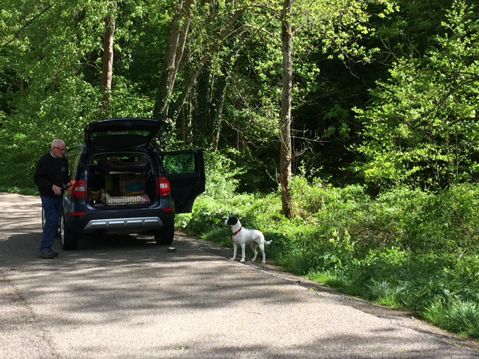
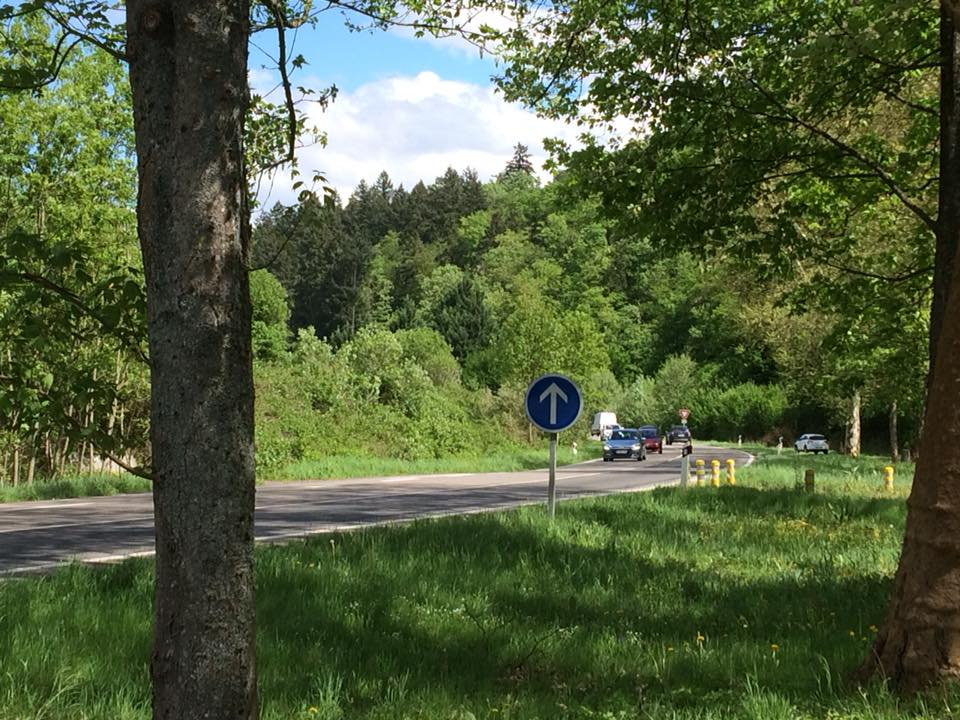
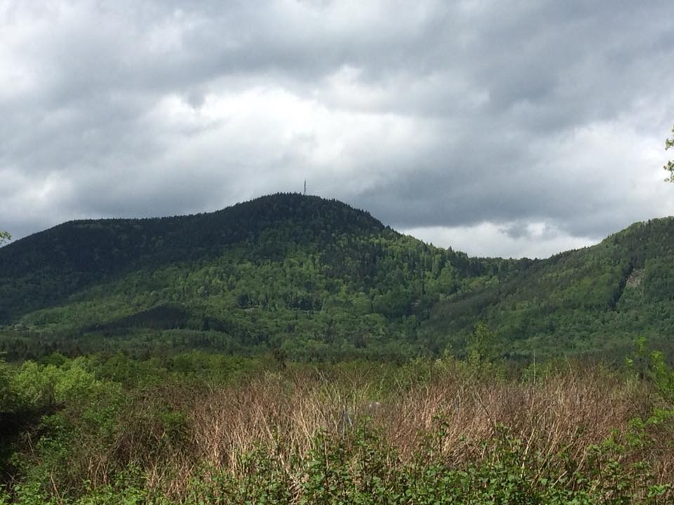
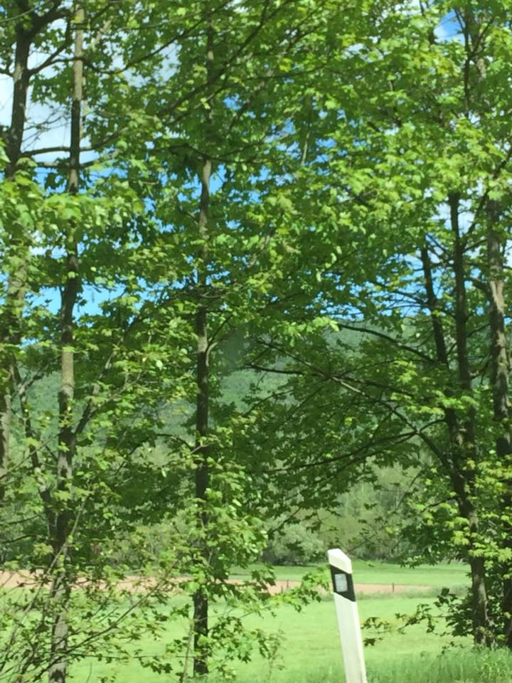
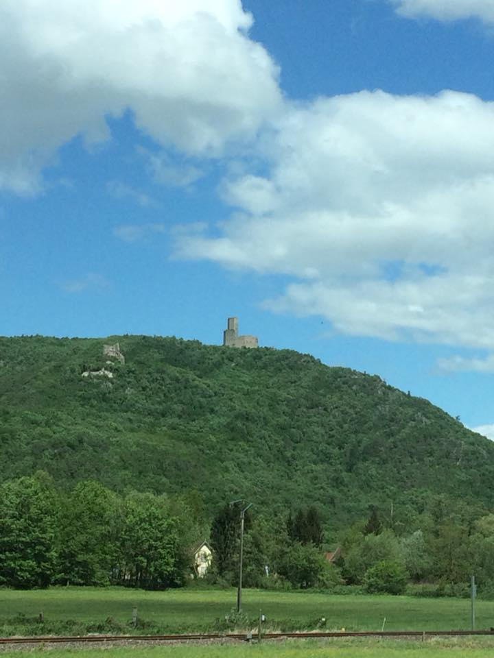

A change of scenery today as we traverse the Saint-Dié-des-Vosges Tunnel Maurice-Lemaire arriving into Alsace, and stopping for a welcome picnic and allowing young Samuel to stretch his legs. Overnighting in Mulhouse.e
ven with bacon, tasted as bland as they look. Home now for asparagus risotto!




